E
Echo
A quiet recorder that remembers
every meeting.
Tap record. Echo transcribes live, writes structured notes the second you stop, and answers questions from your full meeting history — all from one iPhone app.
A quiet recorder that remembers
every meeting.
Tap record. Echo transcribes live, writes structured notes the second you stop, and answers questions from your full meeting history — all from one iPhone app.
You forget more
than you realize.
The room is brilliant. A week later, the room is gone.
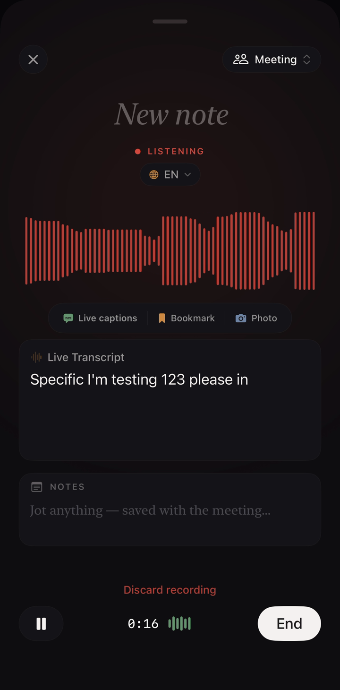
Tap once. Apple Speech runs locally on your iPhone — your audio never leaves the device. 30+ languages, including a multilingual mode for the meetings that switch between English and Mandarin mid-sentence.
Echo reads back the transcript the second you stop and surfaces what mattered — who was there, what was agreed, what's owed. Review screen, everything pre-checked. You confirm.
No more "I'll write up the action items later."
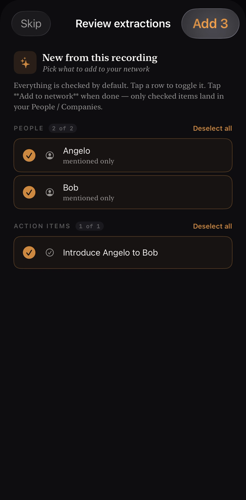
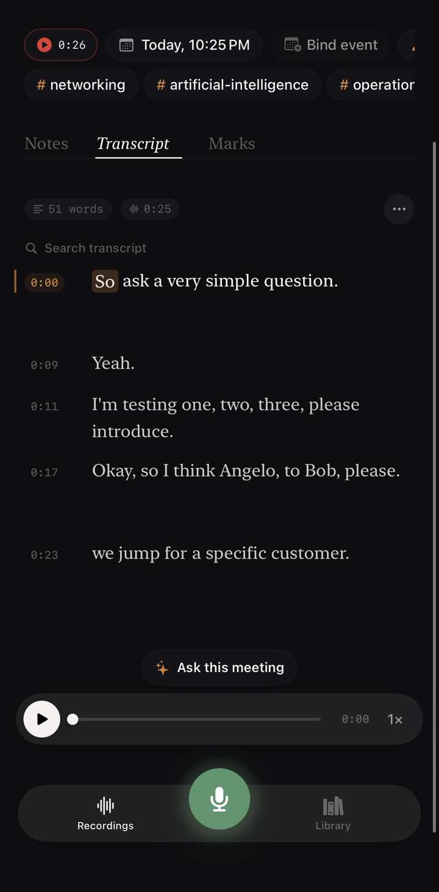
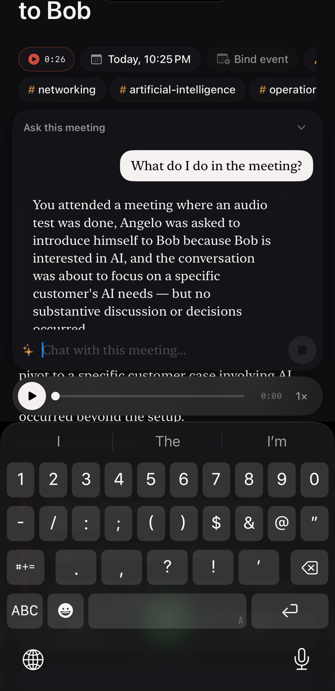
"What did Bob say about pricing?" Answers are grounded in the actual transcript — never invented. Works inside one meeting, or across your whole history.
YOUR LIBRARY
Five tabs. People. Inbox. Photos. Journals. Collections. Each one a different way of being remembered.
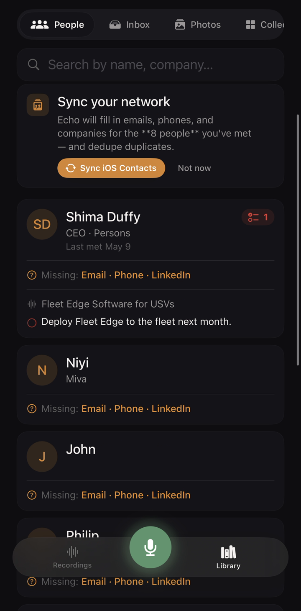
Every name Echo hears becomes a person. Tap Sarah and see the seven meetings she was in this quarter, the three commitments she made to you, and the action items still open with her.
No CRM entries. No tagging. A directory that grows in the background.
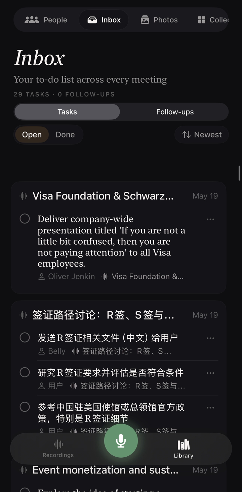
When you finish a meeting, Echo finds the to-dos. Inbox is where they all wait — Tasks and Follow-ups, Open and Done. Tap any item to jump back to the moment it was decided, see who said it, and check it off when it's handled.
Take a photo while a recording is running — a whiteboard, a slide, a face across the table — and it files itself with that meeting. Photos tab shows them all by meeting, by collection, or by date.
No camera-roll archaeology.
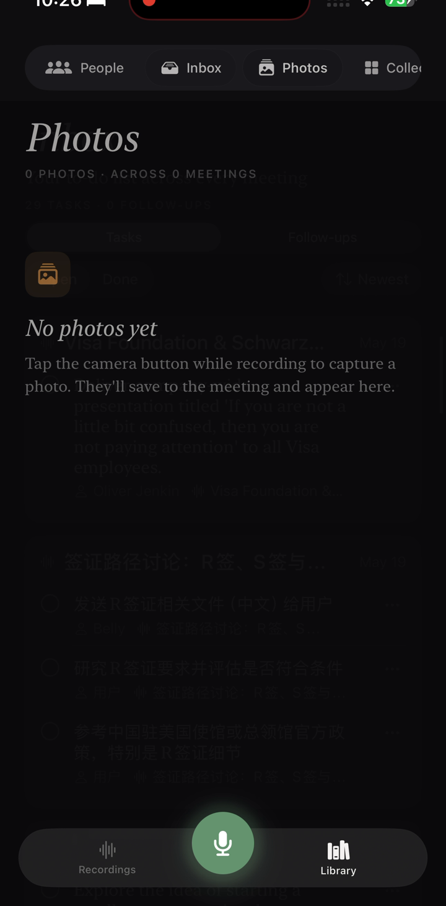
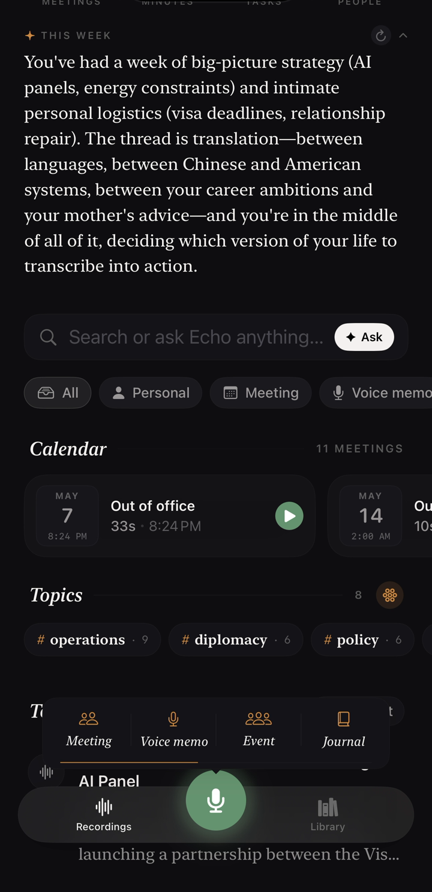
Not every recording is a meeting. Journals is for the walks home, the morning thoughts, the things you'd rather not file as work. Same on-device transcription. No extractions, no action items — just the words, dated and waiting if you ever want them again.
Group recordings into a Collection — a conference, a sprint week, an off-site — and Echo treats the whole arc as one thing. Programme. Sessions. Synthesised themes across days. The week where ten meetings belong to one story, told as one story.
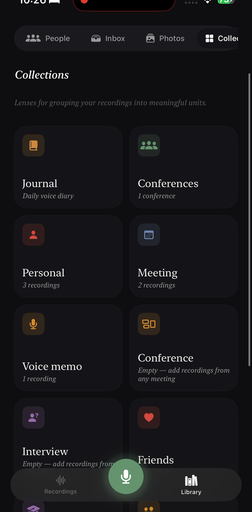
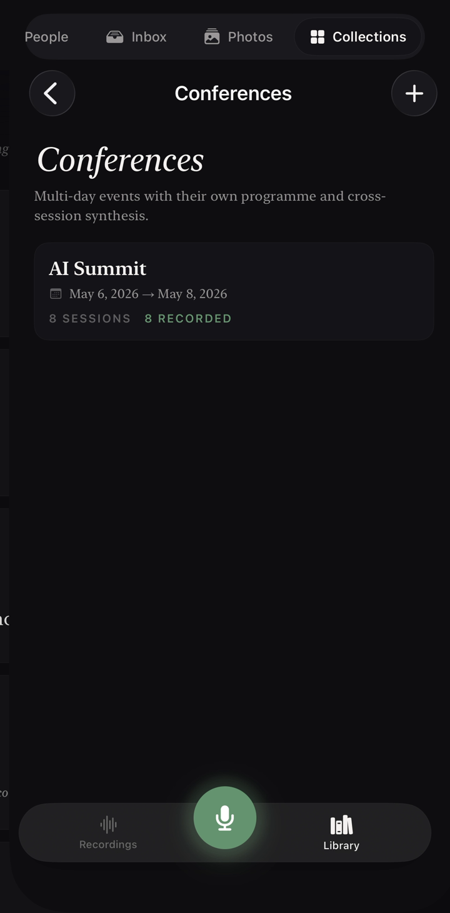
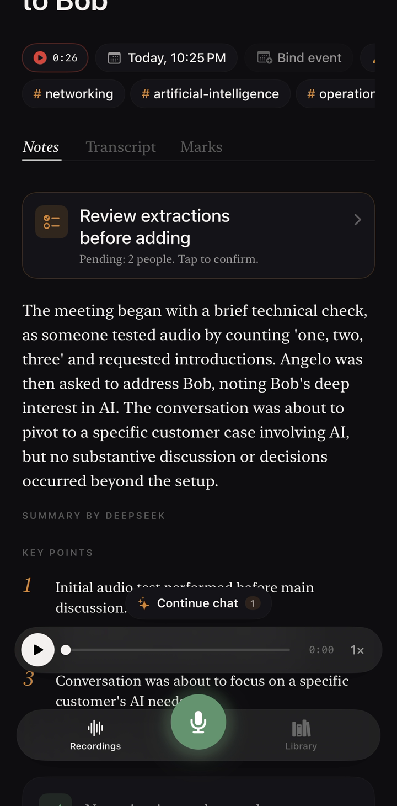
An editorial paragraph plus numbered key points, written in seconds — powered by your own AI key (Claude or DeepSeek). The voice of a thoughtful editor, never a marketing brief.
Tap any line to play from it. Bookmarks, photo marks, and full-text search — the source of truth behind everything else on this page.
Open Echo, pick a type (Meeting · Voice memo · Event · Journal), and tap the mic. Or set up Back Tap for a one-tap shortcut.
Live transcript builds in real time. Bookmark moments, jot anything alongside. Recording survives interruptions and locked screens.
Echo writes a clean AI summary in seconds. Review extracted people and action items, pick what to keep, and it's all timestamped, searchable, and ready.
Echo has no server. No account. No analytics. No third-party trackers. Audio recordings live in your iPhone's local storage. Transcripts stored in SwiftData on your device. AI features are opt-in — when you add your own API key, only the transcript text is sent, never the recording.
The app itself is free. AI features (summaries, the Ask-this-meeting chat) use your own API key from Claude or DeepSeek — you pay them directly, typically pennies per meeting. No subscription to Echo.
Yes. Echo keeps transcribing even when you lock your phone or switch to another app. The recording survives interruptions like phone calls.
30+ languages via Apple Speech, on-device. Multilingual mode is built for code-switching speakers (e.g. an English-Mandarin meeting transcribes both languages in one pass).
Both. Echo uses your iPhone's microphone, so it captures any audio your phone can hear — in-person rooms, Zoom on speaker, AirPods, etc.
Yes. Journal is one of four recording modes and skips the people/action-item extraction by default. Speak; Echo transcribes; the entry files itself with a date and lives alongside your meetings (but private).
Conferences are Collections — multi-day, date-bounded groupings of related recordings. You get one synthesised page across all the sessions: themes, decisions, follow-ups owed. Useful for summits, off-sites, or any week where ten meetings belong to one story.
On your iPhone, in SwiftData. iCloud Backup catches them like any iPhone app. No server, no account — your meetings never leave your device unless you choose to send the transcript text to an AI provider for summary.
One person — Phillip An, a Schwarzman Scholar at Tsinghua University. Built solo because every meeting in Beijing was a translation problem with no good memory tool to match.